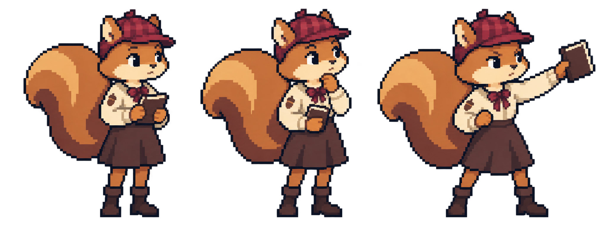

별빛 언덕에 맞춘 다람
털과 옷의 잔묘사를 줄이고, 꼬리와 치마의 명암을 크게 정리했습니다. 기본·생각·감정 포즈를 같은 배경 위에서 확인해 보세요.

새 다람 · 기본


원본 게임과 기존 다람 파일은 그대로 두고 별도 시안으로 보관했습니다.
파일 규격과 전달 정보
배경 위 배치로 어울림을 확인하는 생성 시안입니다. 엄격한 공통 픽셀 격자·26색 팔레트·머리와 몸 비율까지 검증된 최종 도트는 아닙니다. 가장자리와 색 변화가 남아 있습니다. PNG에는 세 포즈가 서로 다른 너비로 들어 있으므로, 3등분하지 않고 제공한 프레임 좌표를 사용하세요.